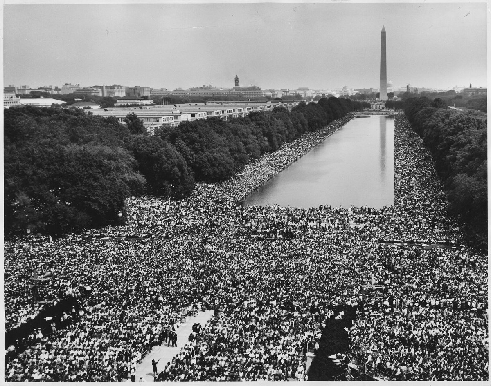

Mác-tin Lu-thơ Kinh
(Martin Luther King Jr., 1929 – 1968)
Mục sư, nhà hoạt động nhân quyền người Mĩ gốc Phi.
Một trong những nhà lãnh đạo có ảnh hưởng lớn nhất nước Mĩ; lãnh tụ Phong trào Dân quyền Mĩ, đấu tranh bằng con đường bất bạo động.
Nổi tiếng với các bài diễn thuyết về những vấn đề lớn của thế giới, xã hội và con người.
Bài diễn văn nổi tiếng nhất: Tôi có một ước mơ
.
Tôi có một ước mơ(28/8)
I Have a Dream
nơi bài diễn văn được đọc
Khẳng định quyền bình đẳng của người da đen và kêu gọi người da đen đấu tranh giành quyền bình đẳng.
Hình ảnh, câu văn giàu sức truyền cảm.
Lập luận chặt chẽ, thuyết phục.
Năm 1999, một cuộc khảo sát các học giả về nghệ thuật diễn thuyết xếp bài này đứng đầu các bài diễn văn của nước Mĩ thế kỉ XX.
SGK Ngữ văn 11, tập 1 · Bài 3: Cấu trúc của văn bản nghị luận
Vấn đề trọng tâm được đề cập ở văn bản Tôi có một ước mơ
là khẳng định quyền bình đẳng của người da đen và kêu gọi sự đấu tranh giành quyền bình đẳng cho người da đen.
Điều này được thể hiện qua:
Cách tác giả đề cập đến Tuyên ngôn giải phóng nô lệ
ở đoạn hai và nhấn mạnh dù đã mở ra đường lối ánh sáng cho công cuộc chống nạn phân biệt, người da đen vẫn bị áp bức đến trăm năm sau.
Nạn phân biệt chủng tộc kinh khủng thể hiện qua các bằng chứng tác giả nêu:
không thuê được phòng nghỉ ngơi trên xa lộ cao tốc hay khách sạn trên thành phố
chưa được tự do di chuyển
tấm bảng ghi:
người da trắng”
Các luận điểm được tác giả nêu ra trong văn bản là:
Đoạn 1 (từ đầu đến công lí chiếu rọi
), sự cấp bách, không thể trì hoãn của việc đứng lên đòi lại công bằng cho người da đen trước tình cảnh hiện tại
→Bằng chứng thể hiện luận điểm 1:
Chúng ta cũng đến nơi thiêng liêng này để nhắc nhở nước Mỹ về tính cấp bách của thời khắc Ngay bây giờ không còn là lúc để lẩn tránh trong sự xoa dịu xa xỉ hay trong những liều thuốc an thần rằng mọi việc sẽ từ từ thay đổi.
Cụm từ lặp lại đây là lúc
,...
Đoạn 2 (từ Và có một điều
đến hết): việc đấu tranh đòi lại nhân quyền phải được diễn ra phi bạo lực và niềm tin vào công lí.
Đừng thỏa mãn cơn khát tự do bằng những chén hận thù cay đắng
không được phép để cuộc phản kháng của chúng ta nhuốm màu bạo lực
,...
tác giả đề cao sự quan trọng của việc đấu tranh cho tự do bằng chính lí lẽ và chính trực. Không được vì hận thù mà làm mất đi ý nghĩa của cuộc đấu tranh nhân quyền thiêng liêng.
→BC: Tôi mơ rằng một ngày kia
... đến hết.
→Tác giả khẳng định niềm tin vào tương lai tươi sáng nơi những viễn cảnh tươi đẹp về màu da chung sống hòa thuận. Khẳng định rằng tương lai bình đẳng của xã hội Mỹ.
Cảm ơn thầy cô và các bạn đã lắng nghe